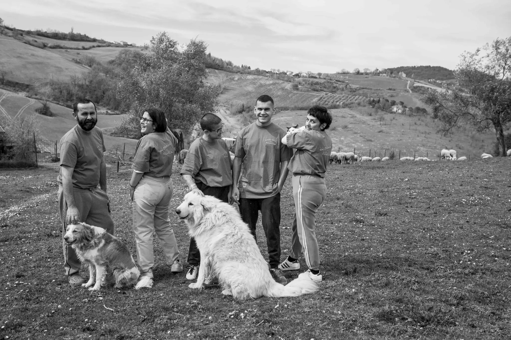

Da due generazioni custodiamo l'arte del pecorino sulle colline dell'Emilia-Romagna
Tutto ha inizio negli anni '60, quando nonno Michele iniziò a trasformare il latte delle sue pecore in formaggio, seguendo i ritmi della natura e le tecniche tramandate di padre in figlio. Oggi, come allora, ogni forma nasce dalla cura quotidiana del gregge, dalla scelta dei pascoli migliori e da una lavorazione interamente manuale.

Il Pascolo
Le nostre pecore pascolano libere tra i profumi del mirto, del timo e del cisto selvatico a oltre 800 metri sul livello del mare. È proprio questo che rende unico il nostro latte.
La Metamorfosi
Il latte crudo viene scaldato e addizionato con caglio di agnello. La magia inizia: il liquido diventa solido, la materia prende forma tra le mani del casaro.
La Stagionatura
Nelle nostre cantine naturali, il tempo fa il suo lavoro. Settimane, mesi — ogni giorno il formaggio evolve, matura, si perfeziona. Non abbiamo fretta.
La Tavola
Il viaggio si compie quando la forma viene aperta e condivisa. Ogni fetta porta con sé il profumo dei pascoli, la pazienza della stagionatura e la storia di chi l'ha creata.
Dal gregge al gomitolo,
con colori della terra.
La lana delle nostre pecore non va sprecata. La raccogliamo, la laviamo e la filiamo a mano, tingendola con pigmenti naturali ricavati da piante e radici del territorio. Ogni gomitolo porta con sé i colori della nostra terra: l'ocra della terra, il verde del mirto, il marrone delle castagne.
Chiedi info sulla lanaQuattordici caratteri,
un'unica anima.
Ogni formaggio nasce da un gesto antico e da un latte unico. Dalla ricotta fresca al grande stagionato, ogni forma racconta mesi di cura, pazienza e il carattere inconfondibile dei nostri pascoli.